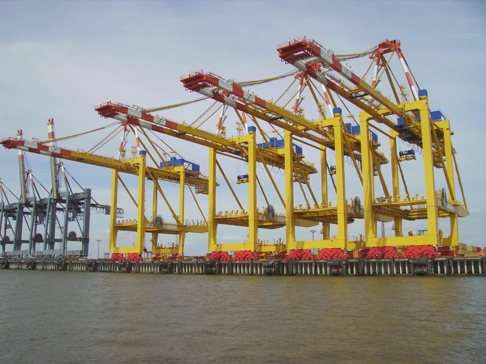

Every box finds its way
At the Port of Brindlewick, big ships meet trucks and trains. Our cranes lift boxes day and night, all year round.
Track a ship See how a box movesThe box that changed the world
Toys, bikes and shoes in your home came across the sea in a steel box. Every box has the same strong corners, so cranes, ships, trucks and trains all over the world can carry it.
Ports count boxes in TEU. That means "twenty-foot equivalent unit": one short box. A long 40-foot box counts as 2 TEU.
Every box has its own code, painted on its door:
BRWU 204613 3
In this pretend code, three letters say who owns it. U means it is a box for goods. Then come six numbers, and the last number is a check number. It catches typing mistakes.

A port that never sleeps
Each ship ties up at a berth, its parking place at the quay. Ships cost a lot of money for every hour they wait, so we work in three shifts. When one team goes home, the next team climbs into the cranes.
- Berths for big ships
- 9
- Ship-to-shore cranes
- 14
- Open
- 24 h, every day
- Boxes last year
- 1.2 million TEU